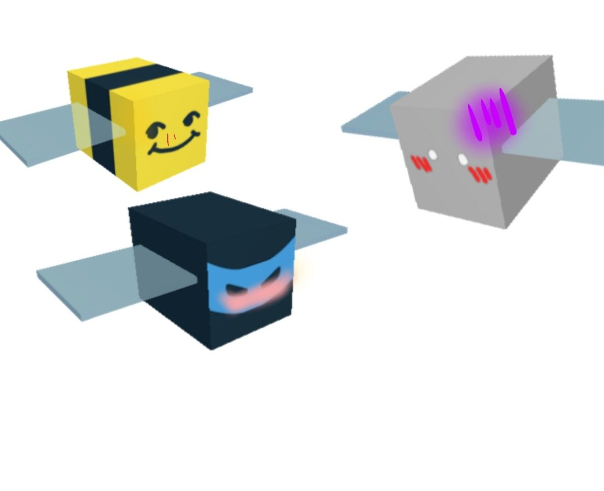

BEE SWARM WIKI
BEE SWARM SIMULATOR WIKI
fake wiki
BEES IN BSS
🐝 Wichtige Grundregeln
Einzigartige Bienen: Versuche am Anfang, keine doppelten normalen Bienen im Stock zu haben. Verschiedene Bienen bringen verschiedene Fähigkeiten mit.
Star Treats: Verschwende sie nicht. Am Anfang sind sie besonders für Event-Bienen wichtig.
🎟️ Event-Bienen
Tabby Bee: Ein guter erster Kauf. Ihre Fähigkeit „Tabby Love“ wird mit der Zeit stärker.
Photon Bee: Sie hat viel Energie und hilft beim schnellen Sammeln.
Crimson & Cobalt Bees: Dieses Duo passt zu roten und blauen Feldern.
Puppy Bee: Sie wird später beim Leveln deiner Bienen nützlich.
Bear Bee: Sie kostet Robux und gibt einen Pollen-Buff.
⭐ Gifted Basic Bee
Bonus: Die Gifted Basic Bee gibt dir +20% Pollen. Darum lohnt es sich, sie zu behalten.
So bekommst du sie: Kaufe Basic Eggs und brüte sie aus, statt einen Star Treat zu benutzen.
🎵 Support-Bienen
Music Bee: Gibt Melody und Focus. Das hilft bei kritischen Treffern.
Carpenter Bee: Ihre Marks helfen beim Sammeln von Honig.
Bumble, Looker und Rad Bee: Für den Anfang sind sie nützlich, später kannst du sie ersetzen.
🎨 Farbiger Bienenstock
Mixed Hive: Ein gemischter Bienenstock hilft dir bei den Quests von Bären und NPCs.
Endgame: Einen Bienenstock mit nur einer Farbe baust du besser erst mit passender Ausrüstung und einem guten Amulett.